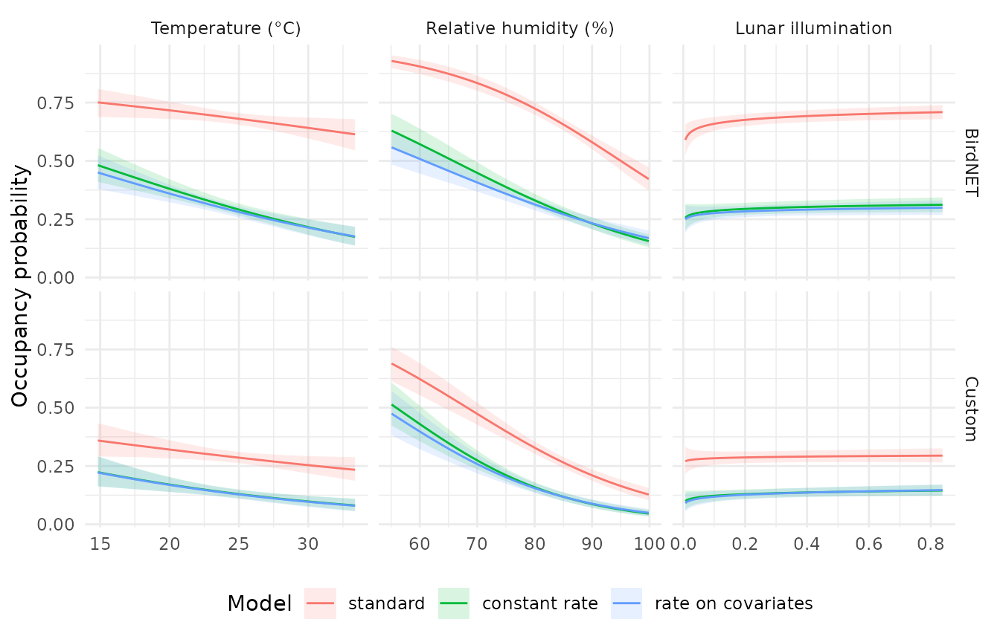

This article fits the models of vignette("crywolf") to
real data: passive acoustic monitoring of the Common Pauraque
(Nyctidromus albicollis) at seven sites in the Pantanal and
adjacent Cerrado, Brazil (Piatti et al., 2026). Two automated
classifiers scored every one-minute recording, a custom model and
BirdNET (Kahl et al., 2021), and an independent sample of about 1% of
the recordings was annotated by ear. The annotated recordings are the
verified method of the multiple-methods design (Miller et al.,
2011).
We ask three questions. How often does each classifier produce a false positive? Do the environmental effects on occupancy change when false positives are modelled? And does the false-positive rate itself depend on the environment?
The data
curiango is a list with one table of recordings, one of
site-nights, and one of annotated recordings:
str(curiango, max.level = 1)
#> List of 3
#> $ minutes :'data.frame': 97806 obs. of 7 variables:
#> $ nights :'data.frame': 1753 obs. of 6 variables:
#> $ verified:'data.frame': 1199 obs. of 4 variables:The occupancy unit is the site-night (whether the species called that
night) and the occasion is the one-minute recording. A recording is an
automated detection when the classifier’s confidence score reaches a
threshold; we use the thresholds that maximized F1 in Piatti et
al. (2026), 0.40 for the custom classifier and 0.10 for BirdNET. Nightly
temperature, relative humidity, and the log of lunar illumination enter
the occupancy model, standardized. The Bioacoustic Index
(bio) and the Acoustic Complexity Index (aci)
of each recording enter the true-detection model, and each recorder site
gets a random intercept.
thresholds <- c(custom = 0.40, birdnet = 0.10)
zs <- function(v) as.numeric(scale(v))
curiango_data <- function(classifier) {
m <- curiango$minutes
auto <- data.frame(site_night = m$site_night,
y = as.integer(m[[paste0("conf_", classifier)]] >=
thresholds[[classifier]]),
bio = zs(m$bio), aci = zs(m$aci), recorder = m$site)
n <- curiango$nights
sites <- data.frame(site_night = n$site_night, temp = zs(n$temp),
rh = zs(n$rh), moon = zs(log(n$moon)))
ver <- data.frame(site_night = curiango$verified$site_night,
y = curiango$verified$y)
fp_data(auto, sites, ver, site = "site_night", recorder = "recorder")
}
d_custom <- curiango_data("custom")
d_custom
#> <fp_data>
#> sites: 1753
#> automated occasions: 97806 (naive occupancy 0.25)
#> verified sites: 784 (1199 occasions, 130 with a confirmed detection)
#> recorders: 7
#> site covariates: temp, rh, moon
#> observation covariates: bio, aciFitting
For each classifier we fit three models that differ only in the
false-positive process: a standard occupancy model that takes every
automated detection at face value (fp = NULL), a constant
false-positive rate (fp = ~ 1), and a rate that depends on
the same three covariates as occupancy
(fp = ~ temp + rh + moon). The code is shown but not run;
the six fits took about an hour each with crywolf 1.0.0, one core per
chain. Later versions can split each chain among cores: with
threads_per_chain = 4, the constant-rate fit of the custom
classifier took 16.5 minutes on an 18-core laptop, with the same
posterior.
Convergence
Before reading any estimate, check the sampler. The table gives, for each fit, the number of divergent transitions, the largest R-hat, and the smallest bulk and tail effective sample sizes over all parameters (4 chains of 1000 draws).
| classifier | model | divergences | max_rhat | min_ess_bulk | min_ess_tail | minutes |
|---|---|---|---|---|---|---|
| Custom | standard | 1 | 1.012 | 767 | 1059 | 54 |
| Custom | constant rate | 0 | 1.004 | 849 | 1123 | 70 |
| Custom | rate on covariates | 0 | 1.004 | 834 | 1202 | 63 |
| BirdNET | standard | 1 | 1.005 | 781 | 1001 | 69 |
| BirdNET | constant rate | 0 | 1.003 | 916 | 1204 | 70 |
| BirdNET | rate on covariates | 1 | 1.008 | 681 | 771 | 57 |
How often does each classifier err?
In the constant-rate model, p10_ref is the probability
that a recording from a night without the species is a detection.
| classifier | p10 | lower | upper |
|---|---|---|---|
| Custom | 0.33% | 0.28% | 0.38% |
| BirdNET | 1.89% | 1.75% | 2.03% |
The custom classifier errs about once in 300 recordings from a night without the species, BirdNET about once in 50. A site-night has on average 56 recordings, so a night without the species would still produce at least one false detection with probability 0.17 (custom) or 0.65 (BirdNET). This is why the standard occupancy model, which reads every detection as presence, estimates a much higher occupancy below.
The custom estimate agrees with the 0.31% (95% CrI 0.29–0.33%) of Piatti et al. (2026). Their BirdNET estimate, 0.43% (0.40–0.46%), is about four times lower than ours, a difference that matches the definition of the occasion. Piatti et al. (2026) used each detection window of the source table as an occasion; here the occasion is the one-minute recording, a detection when any of its windows reaches the threshold. A minute has between 1 and 20 windows in the source table. When the custom classifier detects the species, its score repeats across all windows of the minute; the BirdNET score is usually non-zero in only one of them. Counted by window, BirdNET detections are therefore diluted: in the public deposit, 7.3% of the minutes but only 1.6% of the windows hold a BirdNET detection, a ratio of 4.6, close to the ratio of 4.4 between the two estimates. The custom classifier is not diluted in this way (1.8% of minutes, 3.3% of windows), which is consistent with the agreement of the two custom estimates. The two analyses also differ in their random effects, so the match is approximate. A false-positive rate is a rate per occasion and must be read with its occasion: per one-minute recording, BirdNET at a threshold of 0.10 errs about once in 50 recordings.
The annotated recordings agree with the per-minute rates: of the 942 annotated recordings without the species, 4.5% reached the BirdNET threshold, against 0.4% for the custom classifier. These raw shares are not estimates of the false-positive rate, because many of these recordings come from nights when the species was present, but they give a sense of its order of magnitude.
Occupancy with and without false positives
| classifier | parameter | standard | constant rate | rate on covariates |
|---|---|---|---|---|
| Custom | occ_(Intercept) | -0.90 (-1.02, -0.78) | -1.88 (-2.05, -1.72) | -1.89 (-2.07, -1.73) |
| Custom | occ_temp | -0.13 (-0.25, -0.01) | -0.25 (-0.38, -0.11) | -0.25 (-0.39, -0.11) |
| Custom | occ_rh | -0.68 (-0.82, -0.55) | -0.77 (-0.94, -0.62) | -0.72 (-0.88, -0.56) |
| Custom | occ_moon | 0.04 (-0.08, 0.15) | 0.14 (-0.02, 0.31) | 0.17 (0.01, 0.36) |
| BirdNET | occ_(Intercept) | 0.77 (0.66, 0.89) | -0.86 (-0.98, -0.74) | -0.91 (-1.03, -0.80) |
| BirdNET | occ_temp | -0.14 (-0.26, -0.02) | -0.31 (-0.42, -0.20) | -0.28 (-0.40, -0.17) |
| BirdNET | occ_rh | -0.72 (-0.87, -0.58) | -0.56 (-0.68, -0.44) | -0.46 (-0.57, -0.35) |
| BirdNET | occ_moon | 0.16 (0.06, 0.27) | 0.09 (-0.02, 0.20) | 0.08 (-0.04, 0.20) |
Ignoring false positives inflates occupancy: the intercept, the logit of the probability that the species calls on an average night, drops by about one unit with the custom classifier and by more than 1.5 units with BirdNET once false positives are modelled. The covariate effects keep their signs. Calling activity declines with humidity and with temperature in every model, as Piatti et al. (2026) found, and the temperature effect roughly doubles once false positives are modelled. The effect of moonlight is small and its interval includes zero in most models.
Does the false-positive rate track the environment?
The third model lets the false-positive rate depend on temperature, humidity, and moonlight. Its coefficients are on the logit scale, per standard deviation of each covariate:
| classifier | parameter | mean | lower | upper |
|---|---|---|---|---|
| Custom | fp_(Intercept) | -5.70 | -5.85 | -5.56 |
| Custom | fp_temp | 0.12 | -0.01 | 0.25 |
| Custom | fp_rh | -0.37 | -0.49 | -0.25 |
| Custom | fp_moon | -0.07 | -0.20 | 0.06 |
| BirdNET | fp_(Intercept) | -3.87 | -3.94 | -3.81 |
| BirdNET | fp_temp | -0.03 | -0.08 | 0.02 |
| BirdNET | fp_rh | -0.31 | -0.36 | -0.25 |
| BirdNET | fp_moon | 0.09 | 0.02 | 0.16 |
For both classifiers the false-positive rate falls on humid nights
(fp_rh below zero), so false positives are more frequent
where the species is also more active. This is the situation in which a
constant rate can bias the occupancy slope
(vignette("calibration", package = "crywolf")). Here the
humidity effect on occupancy changes little when the rate is allowed to
depend on humidity, by less than a fifth of its value, so the
constant-rate estimates of the occupancy effects are not far off. The
effects of temperature and moonlight on the false-positive rate are
small or uncertain.
Model comparison
All three models of a classifier use the same automated and verified data, so their leave-one-site-night-out cross-validation scores are comparable.
purrr::map(c("custom", "birdnet"), function(cl) {
l <- purrr::map(fits[paste(cl, names(model_labels), sep = "_")], "loo")
names(l) <- model_labels
loo::loo_compare(l)
}) |> setNames(classifiers)
#> $Custom
#> model elpd_diff se_diff p_worse diag_diff diag_elpd
#> rate on covariates 0.0 0.0 NA
#> constant rate -12.2 8.1 0.93
#> standard -439.6 89.0 1.00
#>
#> $BirdNET
#> model elpd_diff se_diff p_worse diag_diff diag_elpd
#> rate on covariates 0.0 0.0 NA 1 k_psis > 0.7
#> constant rate -43.7 14.2 1.00 1 k_psis > 0.7
#> standard -1217.2 134.1 1.00 1 k_psis > 0.7
#>
#> Diagnostic flags present.
#> See ?`loo-glossary` (sections `diag_diff` and `diag_elpd`)
#> or https://mc-stan.org/loo/reference/loo-glossary.html.Modelling false positives improves the expected predictive accuracy
by 440 (custom) and more than 1200 (BirdNET) units of elpd.
Letting the rate depend on the covariates helps further for BirdNET (a
difference of about three standard errors) but not clearly for the
custom classifier. One site-night in each BirdNET model has a Pareto
k above 0.7, so those comparisons rest on a slightly less
reliable approximation.
Posterior predictive checks
fp_ppc() compares the number of automated detections per
site-night with replicates from the posterior, using the Freeman-Tukey
discrepancy. A Bayesian p-value near 0 or 1 means that the model does
not reproduce the data.
| classifier | model | p_value |
|---|---|---|
| Custom | standard | 0 |
| Custom | constant rate | 0 |
| Custom | rate on covariates | 0 |
| BirdNET | standard | 0 |
| BirdNET | constant rate | 0 |
| BirdNET | rate on covariates | 0 |
No model reproduces the counts of detections per site-night, including those with false positives, in line with Piatti et al. (2026), where no model showed adequate fit at this level. A likely reason, which we have not tested here, is that calls cluster within a night: a calling bird is recorded in runs of consecutive minutes, so detections are more dispersed among nights than independent occasions allow. The estimates above should therefore be read as a comparison among models, not as well-calibrated absolute values; a model with dependence among occasions is beyond the scope of crywolf.
Predicted occupancy
The predictions hold the other covariates at their means and are shown on the original scale of each covariate.

Predicted probability that the species calls on a night, with 95% intervals, for each classifier and model.
Each curve is drawn only over the range of the covariate observed in the data.
References
Kahl, S., Wood, C. M., Eibl, M., & Klinck, H. (2021). BirdNET: A deep learning solution for avian diversity monitoring. Ecological Informatics, 61, 101236. https://doi.org/10.1016/j.ecoinf.2021.101236
Miller, D. A., Nichols, J. D., McClintock, B. T., Grant, E. H. C., Bailey, L. L., & Weir, L. A. (2011). Improving occupancy estimation when two types of observational error occur: non-detection and species misidentification. Ecology, 92, 1422–1428. https://doi.org/10.1890/10-1396.1
Piatti, L., de Sousa, D. L. H., Oliveira, B. S., de Melo, A. V., Sugai, L. S. M., & Provete, D. B. (2026). Methodological choices influence ecological inference in passive acoustic monitoring of a Neotropical nightjar. Journal of Avian Biology, in press.
Piatti, L., de Sousa, D. L. H., Oliveira, B. S., de Melo, A. V., Sugai, L. S. M., & Provete, D. B. (2026). Data and code for: Methodological choices influence ecological inference in passive acoustic monitoring of a Neotropical nightjar. Zenodo. https://doi.org/10.5281/zenodo.21795898